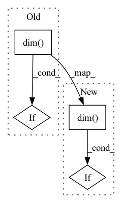

Pattern ID :650
Before Change
p[tmp_mask] = torch.roll(p, 1, dims=-1)[tmp_mask]
// Interpolate pitch.
d = p.dim()
if d == 2 or d == 3:
p = p.transpose(-1, -2)
p = self.linear_intpl(p)
if d == 2 or d == 3:
p = p.transpose(-1, -2)After Change
p[tmp_mask] = torch.roll(p, 1, dims=-1)[tmp_mask]
// Interpolate pitch.
if p.dim() == 1:
p = self.linear_intpl(p)
else:
p = self.linear_intpl(p.transpose(-2, -1)).transpose(-2, -1)
p *= maskIn pattern: SUPERPATTERN
Frequency: 3
Non-data size: 4
Instances Fragment ID: 2281222
Project Name: sp-nitech/diffsptk
Commit Name: 8554148138fd5ebcbc70e0af9d283a62c0175594
Time: 2023-01-30
Author: takenori.yoshimura24@gmail.com
File Name: diffsptk/core/excite.py
M Class Name: ExcitationGeneration
N Class Name: ExcitationGeneration
M Method Name: forward(2)
N Method Name: forward(2)
M Parent Class: nn.Module
N Parent Class: nn.Module
M File Name: diffsptk/core/excite.py
N File Name: diffsptk/core/excite.py
M Start Line: 84
M End Line: 93
N Start Line: 87
N End Line: 91
Before Change
def forward(self, x):
mean, var = self.running_mean, self.running_var
weight, bias = self.weight, self.bias
if x.dim() == 4:
mean, var = mean[:, None, None], var[:, None, None]
weight, bias = weight[:, None, None], bias[:, None, None]
return (x - mean) * torch.rsqrt(var + self.eps) * weight + bias
After Change
self.register_buffer("num_batches_tracked", torch.tensor(0, dtype=torch.long)) // Prevent load errors
def forward(self, x):
if x.dim() != 4:
raise ValueError("expected 4D input (got %dD input)" % x.dim())
mean, var = self.running_mean, self.running_var
weight, bias = self.weight, self.bias
Fragment ID: 2281223
Project Name: jintao-huang/efficientdet_pytorch
Commit Name: 1bc8344a81cb3569922e4a181f552806b0b82dc8
Time: 2020-06-09
Author: hjt_study@qq.com
File Name: utils/detection/utils.py
M Class Name: FrozenBatchNorm2d
N Class Name: FrozenBatchNorm2d
M Method Name: forward(2)
N Method Name: forward(2)
M Parent Class: nn.Module
N Parent Class: nn.Module
M File Name: utils/detection/utils.py
N File Name: utils/detection/utils.py
M Start Line: 114
M End Line: 117
N Start Line: 112
N End Line: 114
Before Change
def forward(self, x):
mean, var = self.running_mean, self.running_var
weight, bias = self.weight, self.bias
if x.dim() == 4:
mean, var = mean[:, None, None], var[:, None, None]
weight, bias = weight[:, None, None], bias[:, None, None]
return (x - mean) * torch.rsqrt(var + self.eps) * weight + bias
After Change
self.register_buffer("num_batches_tracked", torch.tensor(0, dtype=torch.long)) // Prevent load errors
def forward(self, x):
if x.dim() != 4:
raise ValueError("expected 4D input (got %dD input)" % x.dim())
mean, var = self.running_mean, self.running_var
weight, bias = self.weight, self.bias
Fragment ID: 2281224
Project Name: jintao-huang/efficientdet_pytorch
Commit Name: f904ad7387726ecd2dac2c099e3f55a9d1a166ef
Time: 2020-06-09
Author: hjt_study@qq.com
File Name: models/utils.py
M Class Name: FrozenBatchNorm2d
N Class Name: FrozenBatchNorm2d
M Method Name: forward(2)
N Method Name: forward(2)
M Parent Class: nn.Module
N Parent Class: nn.Module
M File Name: models/utils.py
N File Name: models/utils.py
M Start Line: 73
M End Line: 76
N Start Line: 71
N End Line: 73